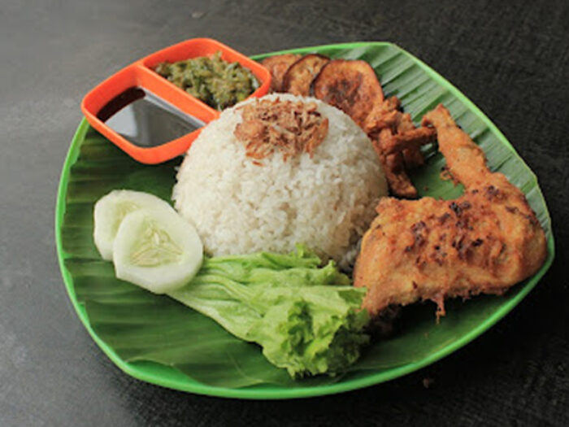

NasiUduk`s Recipes

Description of NasiUduk
Nasi uduk is rice cooked in fragrant coconut milk. It is one of the most well-known street foods in Jakarta.
Ingredients:
- 2 cup rice (use the cup that comes with the rice cooker)
- 1/2 cup thick coconut milk (regular US cup)
- 2 1/2 cup water (regular US cup)
- 2 lemongrass (Indonesian: sereh), bruised and knotted
- etc
How to make:
- Place all ingredients in a rice cooker pot and cook until ready.
- Let rest for 10 minutes before opening the lid.
- Remove the lemongrass, pandan, Indonesian bay leaves, ginger, and galangal. Stir with the rice cooker paddle
- etc